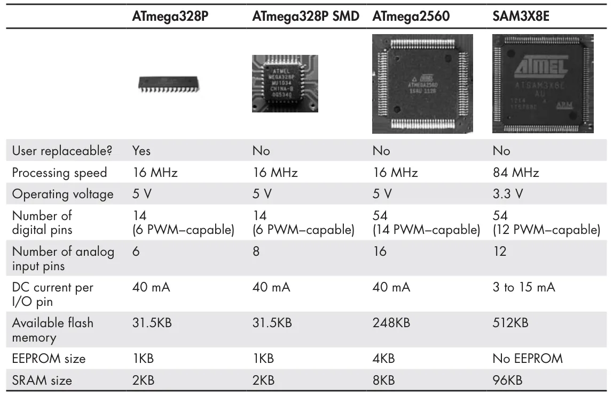
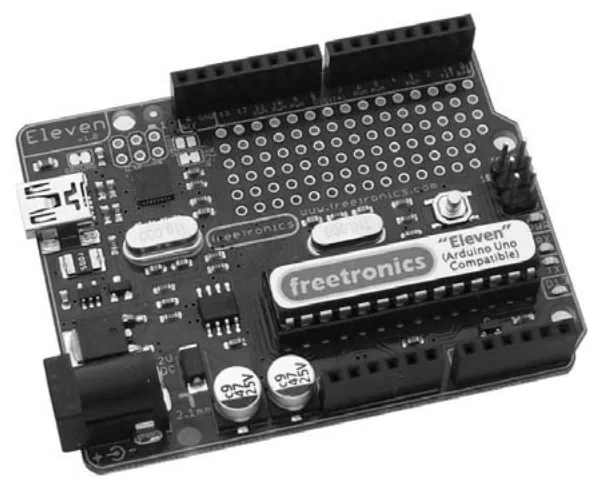
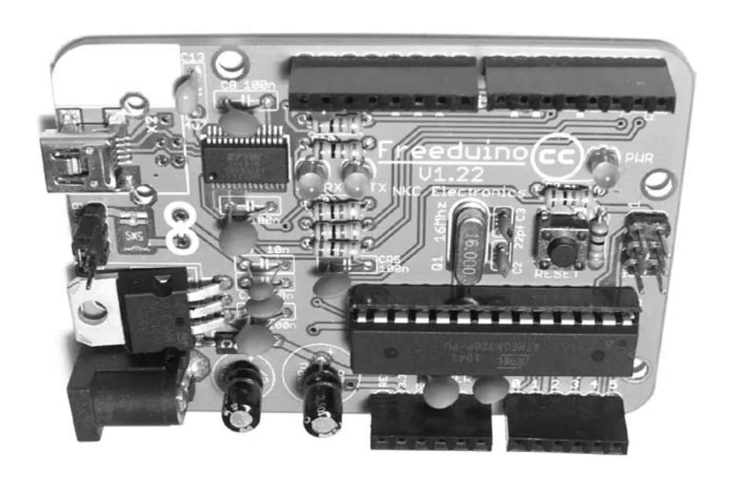
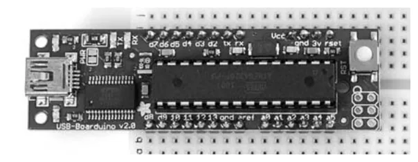
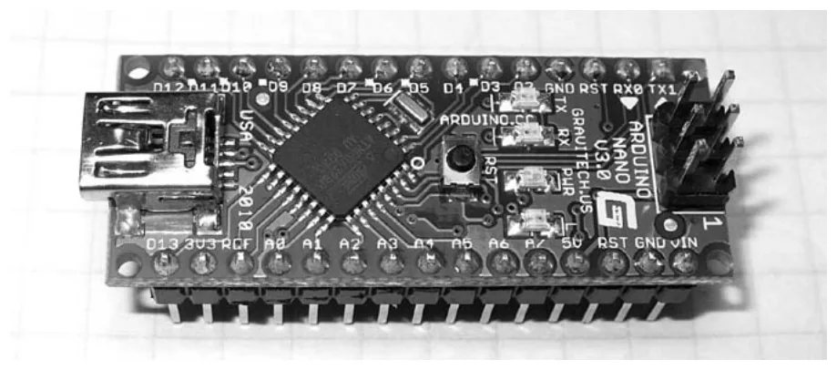
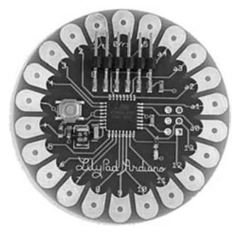
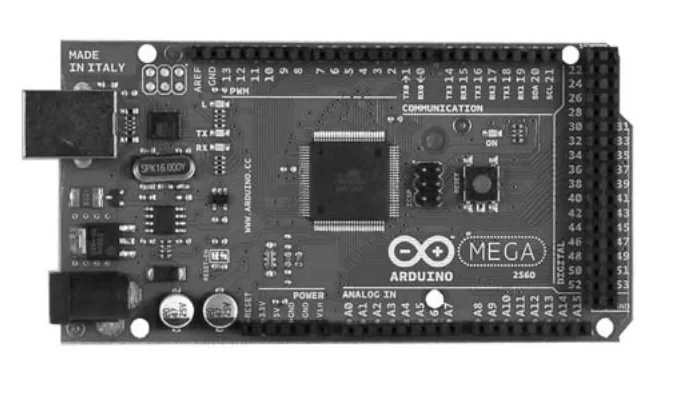
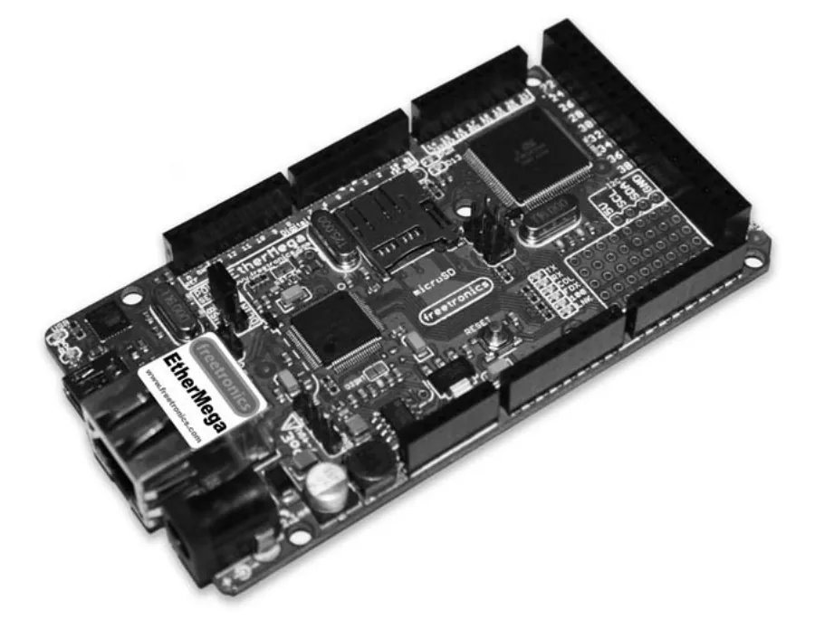
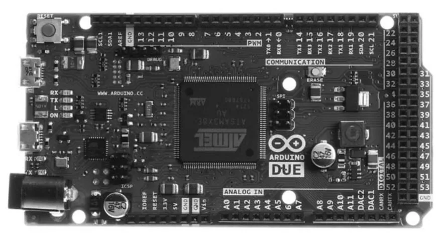

Although we have been working exclusively with the Arduino Uno board throughout the book, you can choose from many alternative boards. These will vary in physical size, the number of input and output pins, memory space for sketches, and purchase price.
One of the crucial differences between boards is the microcontroller used. Current boards generally use the ATmega328 or the ATmega2560 microcontroller, and the Due uses another, more powerful version. The main differences between the two (including both versions of the ATmega328) are summarized in Table 11-2.

The main parameters used to compare various Arduino-compatible boards are the types of memory they contain and the amount of each type. Following are the three types of memory:
- Flash memory is the space available to store a sketch after it has been compiled and uploaded by the IDE.
- EEPROM (electrically erasable programmable read-only memory) is a small space that can store byte variables, as you’ll learn in Chapter 16.
- SRAM is the space available to store variables from your programs.
Let’s explore the range of the available boards.
Arduino Uno
The Uno is currently considered the standard Arduino board. All Arduino shields ever made should be compatible with the Uno. The Uno is considered to be the easiest-to-use Arduino board due to its built-in USB interface and removable microcontroller.
Freetronics Eleven
Many boards on the market emulate the function of the Arduino Uno, and some have even improved on the standard design. One of these is the Freetronics Eleven, shown in Figure 11-16.

Although the Eleven is completely compatible with the Arduino Uno, it offers several improvements that make it a worthwhile product. The first is the large prototyping area just below the digital I/O pins. This area allows you to construct your own circuit directly on the main board, which can save space and money, since you won’t need to purchase a separate prototyping shield.
Second, the transmitter/receiver (TX/RX), power, and D13 LEDs are positioned on the far-right side of the board; this placement allows them to be visible even when a shield is attached. Finally, it uses a micro-USB socket, which is much smaller than the standard USB socket used on the Uno. This makes designing your own shield simpler, since you don’t have to worry about your connections bumping into the USB socket. It is available from http://www.freetronics.com/products/eleven/.
The Freeduino
The Freeduino board comes from a collaborative open source project that describes and publishes files to allow people to construct their own Arduino-compatible boards. One of the more popular designs is the Duemilanove-compatible board kit, shown in Figure 11-17.

You can use the Freeduino board to run all the projects in this book. Two of the major benefits of the Freeduino are that it’s cheap and that assembling a board by hand is intrinsically satisfying. The Freeduino kit is available from http://www.seeedstudio.com/.
The Boarduino
The Boarduino is a minimalist interpretation of an Arduino designed for working with solderless breadboards. It comes in a kit and needs to be soldered together. The assembled version is shown in Figure 11-18.

The Boarduino kit is available from http://www.adafruit.com/. It offers all the functionality of the Freeduino kit but requires a separate power supply when more than 500 mA of current is required.
The Arduino Nano
When you need a compact, assembled Arduino-compatible board, the Nano should fit the bill. Designed to work in a solderless breadboard, the Nano (Figure 11-19) is a tiny but powerful Arduino.

The Nano measures only 0.7 inches by 1.7 inches, yet it offers all the functionality of the Boarduino and the Freeduino. Furthermore, it uses the SMD version of the ATmega328P, so it has two extra analog input pins (A6 and A7). The Nano is available from http://www.gravitech.us/arna30wiatp.html.
The Arduino LilyPad
The LilyPad is designed to be integrated inside creative projects, such as wearable electronics. In fact, you can actually wash a LilyPad with water and a mild detergent, so it’s ideal to use for lighting up a sweatshirt, for example. The board design is unique, as shown in Figure 11-20.

The I/O pins on the LilyPad require that wires be soldered to the board, so the LilyPad is more suited for use with permanent projects. As part of its minimalist design, it has no voltage regulation circuitry, so it’s up to the user to provide his or her own supply between 2.7 and 5.5 V. The LilyPad also lacks a USB interface, so a 5 V FTDI cable is required to upload sketches. You can get Arduino LilyPad boards from almost any Arduino retailer.
The Arduino Mega 2560
When you run out of I/O pins on your Arduino Uno or you need space for much larger sketches, consider a Mega 2560. It is physically a much larger board than the Arduino, measuring 4.3 inches by 2.1 inches; it’s shown in Figure 11-21.

Although the Mega 2560 board is much larger than the Uno, you can still use most Arduino shields with it, and Mega-sized prototyping shields are available for larger projects that the Uno can’t accommodate. Since the Mega uses the ATmega2560 microcontroller, its memory space and I/O capabilities (as described in Table 11-2) are much greater than those of the Uno. Additionally, four separate serial communication lines increase its data transmission capabilities. You can get Mega 2560 boards from almost any Arduino retailer.
The Freetronics EtherMega
When you need an Arduino Mega 2560, a microSD card shield, and an Ethernet shield to connect to the Internet, your best alternative is an EtherMega (Figure 11-22), because it has all these functions on a single board and is less expensive than purchasing each component separately. The EtherMega is available from http://www.freetronics.com/ ethermega/.

The Arduino Due
With an 84 MHz processor that can run your sketches much faster, this is the most powerful Arduino board ever released. As you can see in Figure 11-23, the board is quite similar to the Arduino Mega 2560, but there is an extra USB port for external devices and different pin labels.

Furthermore, the Due has just over 16 times the memory of an Uno board, so you can really create complex and detailed sketches. However, the Due operates only on 3.3 V—so any circuits, shields, or other devices connected to the analog or digital pins cannot have a voltage greater than 3.3 V. Despite these limitations, the benefits of using the Due outweigh the changes in the hardware.